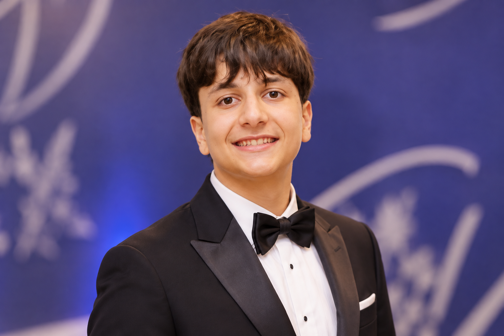

O futuro começa
com curiosidade.
Sou Lucca Rodrigues Frazili. Tenho 15 anos e estou no 1º ano do curso Técnico em Inteligência Artificial na FECAP.
Conheça minha jornadaAprender.
Testar.
Evoluir.
Estou começando minha trajetória em tecnologia com uma pergunta sempre presente: o que é possível criar a partir de uma boa ideia?
O curso Técnico em Inteligência Artificial na FECAP é o ponto de partida dessa exploração. Este portfólio acompanha o que aprendo, experimento e construo ao longo do caminho.
Uma trajetória
em movimento.

Formação técnica
1º ano do curso Técnico em Inteligência Artificial na FECAP.
Aprendizado constante
Um espaço para registrar novas ideias, descobertas e práticas.
Próximos passos
Transformar o que aprendo em projetos para compartilhar aqui.
Ideias em
desenvolvimento.
Este espaço vai crescer junto comigo. Conforme meus projetos ganharem forma, eles aparecerão aqui com o processo e o resultado de cada experiência.
O próximo projeto
começa aqui.
Novos estudos e criações serão apresentados neste portfólio à medida que minha jornada em IA avançar.
Vamos trocar
ideias?
Acompanhe minha jornada e entre em contato pelo Instagram ou e-mail.